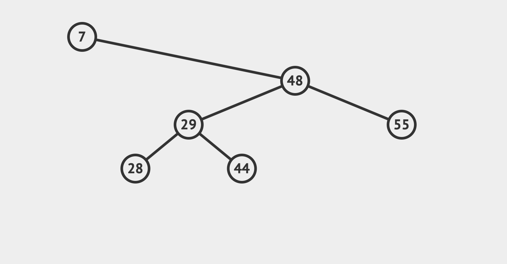
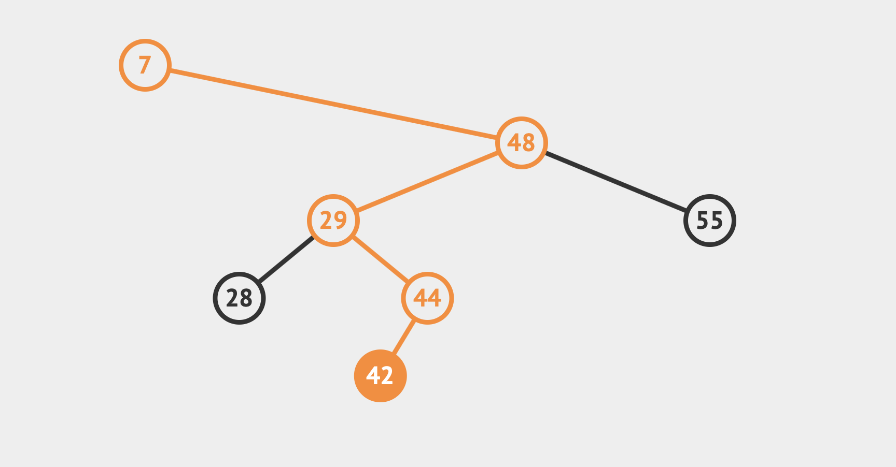
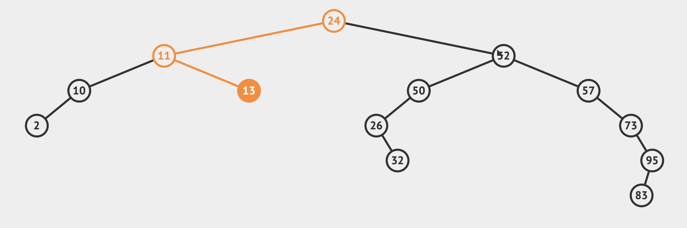
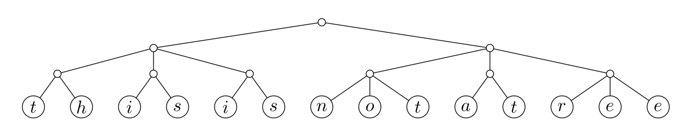
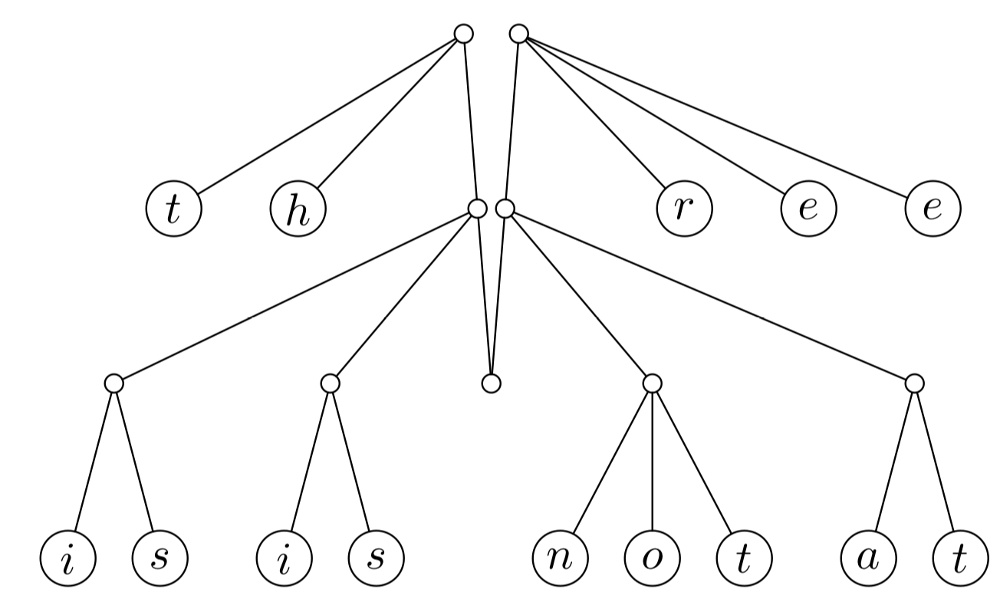
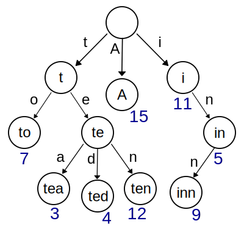
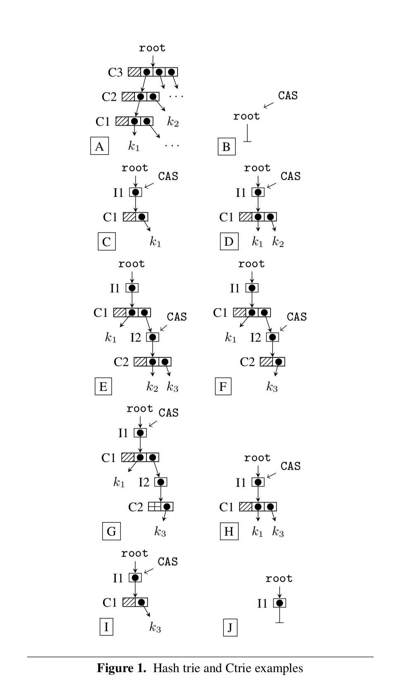

Purely Functional Data Structures
Practical Side of Implementing Immutable Structures
Grzegorz Piwowarek
@pivovarit
{ 4comprehension.com }
Lead Software Engineer @ CasumoTech
Trainer @ Bottega IT Minds
@pivovarit
Questions?
Immutability
List<String> transform(List<String> list);
List<String> transform(List<String> list) {
list.add(this.state.get(0));
list.add(SOME_CONSTANT);
this.orderPizza();
if (MOON.getLunarPhase() == FULL) list.remove(7);
this.moreState.addAll(list);
OtherClass.mutableStaticField = list;
return list;
}
Immutability helps in minimizing the number of invalid states
User user = new User();
user.setName(...);
user.setSurname(...);
user.setPhone(...);
// ...
user.set(...);
User user = new User(); // 2^0
user.setName(...);
user.setSurname(...);
user.setPhone(...);
// ...
user.set(...);
User user = new User(); // 2^0
user.setName(...); // 2^1
user.setSurname(...); // 2^2
user.setPhone(...); // 2^3
// ...
user.set(...); // 2^N
Date date = new Date();
Set<Date> dates = new HashSet<>();
dates.add(date);
date.setTime(42);
dates.contains(date); //false
User user = new User(name, surname);
Error space reduced drastically
An object is immutable when:Java Concurrency in Practice, Brian Goetz
its state cannot be modified after construction all its fields are final* "this" reference doesn't escape during construction
Is String immutable?
final class String {
// ...
private final byte[] value;
private final byte coder;
private int hash;
// ...
}
public int hashCode() {
int h = hash;
if (h == 0 && value.length > 0) {
hash = h = isLatin1() ? StringLatin1.hashCode(value)
: StringUTF16.hashCode(value);
}
return h;
}
It depends.
Is String immutable?
Does immutable even exist?
public static void main(String[] args) throws Exception {
VarHandle VALUE = MethodHandles.privateLookupIn(
String.class, MethodHandles.lookup())
.findVarHandle(String.class, "value", byte[].class);
Object kotlin = VALUE.get("Kotlin");
Object java = VALUE.get("Java!!");
System.arraycopy(java, 0, kotlin, 0, Array.getLength(kotlin));
System.out.println("Kotlin"); // Java!!
}
Immutable objects are not always thread-safe
The state of a new collection instance may not have been "published" (in the sense of the Java Memory Model specification), so that an unsynchronized non-volatile read from another thread may observe the object in an invalid state
https://github.com/scala/bug/issues/7838
If someone unsafely publishes new ::("", Nil) or Vector(1) to another thread,
that thread could observe a inconsistent state (...)
Designing Immutable APIs
java.util.List
static abstract class AbstractImmutableList<E>
extends AbstractImmutableCollection<E> ... {
// all mutating methods throw UnsupportedOperationException
void add(...) { throw uoe(); }
boolean addAll(...) { throw uoe(); }
E remove(...) { throw uoe(); }
void replaceAll(...) { throw uoe(); }
E set(...) { throw uoe(); }
void sort(...) { throw uoe();
}
The easy and not-very user-friendly way
And it violates Liskov's Substitution Principle
The key to user-friendly APIs of immutable structures are "mutating" methods returning a copy of the source
static abstract class AbstractImmutableList<E>
extends AbstractImmutableCollection<E> ... {
// all mutating methods return a changed copy
List<E> add(...) { return copyWith(...) }
List<E> addAll(...) { return copyWithAll(...) }
List<E> remove(...) { return copyWithout(...) }
List<E> replaceAll(...) { return copyWithReplaced(...) }
List<E> set(...) { return copyAndSet(...) }
List<E> sort(...) { return copySorted(...) }
}
static abstract class AbstractImmutableList<E>
extends AbstractImmutableCollection<E> ... {
// all mutating methods return a changed copy
List<E> add(...) { return copyWith(...) }
List<E> addAll(...) { return copyWithAll(...) }
List<E> remove(...) { return copyWithout(...) }
List<E> replaceAll(...) { return copyWithReplaced(...) }
List<E> set(...) { return copyAndSet(...) }
List<E> sort(...) { return copySorted(...) }
}
That's quite a lot of copying
... and iterating
"Haskell computations produce a lot of memory garbage - much more than conventional imperative languages."https://wiki.haskell.org/GHC/Memory_Management
(...)
"It's not uncommon to produce 1gb of data per second ..."
Persistent Data Structures
A data structure that supports multiple versions is called persistent"Making data structures persistent" - James R. Driscoll, Neil Sarnak, Daniel D. K. Sleator, and Robert E. Tarjan
while a data structure that allows only a single version at a time is called ephemeral
Structural sharing
Gain efficiency by minimizing copying and maximizing reuse of existing elements

Rich Hickey’s “Clojure Concurrency”
Functional Data Structures by Oleg Šelajev
Purely Functional Data Structures by Grzegorz Piwowarek
String
A Persistent Data Structure?
public String substring(int beginIndex) {
// ...
return (beginIndex == 0)
? this
: new String(value, beginIndex, subLen);
}
public String trim() {
// ...
return ((st > 0) || (len < value.length))
? substring(st, len)
: this;
}
Avoids new String allocation and is safe
ArrayList
Doesn't work with mutable structures
public List<E> subList(int fromIndex, int toIndex) {
subListRangeCheck(fromIndex, toIndex, size);
return new SubList(this, 0, fromIndex, toIndex);
}
Source can be mutated which can lead to sneaky bugs
For example:
List<Integer> numbers = // ...
List<Integer> transformed = guava.Lists.transform(numbers, i -> i);
List<Integer> someNumbers = transformed.subList(0, 3);
Collections.shuffle(numbers);
System.out.println(numbers); // [2,3,4,5...]
System.out.println(someNumbers); // [2,3,4]
Persistent Singly-Linked List
class Cons<T> implements List<T> {
private final T head;
private final List<T> tail;
}
class Nil<T> implements List<T> {
private static final Nil<?> INSTANCE = new Nil<>();
}
List<Integer> list1 = List.of(0);
List<Integer> list2 = list1.prepend(1);
list1: List(0, NIL)
list2: List(1, list1)
List<T> prepend(T element) {
return new Cons<>(element, this);
}
Zero copy and constant time
What about List#append?
List<T> append(T element) {
return foldRight(of(element), (x, xs) -> xs.prepend(x));
}
O(n)
Acceptable for lists since we have O(1) prepend
Immutable Structures are thread-safe
...but not always useful for multithreaded scenarios
From the book "King Midas and the Golden Touch" by Marie C Craft
If we want to share "updates" of an immutable structure, we need to manually control access to the root reference
private volatile ImmutableList<Integer> queue;
// ..
// major contention here!
private synchronized void prepend(Integer e) {
queue = queue.prepend(e);
}
...or just use a dedicated mutable data structure
...or a different way of sharing updates
Same applies to any immutable structure
private volatile String text;
private synchronized void add(String postfix) {
text = text + postfix;
}
We could do the same lock-free with CAS but that would generate even more garbage and further stress GC
Persistent Set
class Set<T> {
private final List<T> set;
}
Highly inefficient because of O(N) element access
Can we do something... smarter?
We could use a tree
Path copying
Path copying
Subtrees not on the path can be shared
Persistent Queue
class Cons<T> implements List<T>, Queue<T> {
private final List<T> queue;
}
Works great as a LIFO stack
Queues exhibit different access patterns than lists which makes this implementation highly inefficient
Efficient Persistent Queue
class Cons<T> implements List<T>, Queue<T> {
private final List<T> front;
private final List<T> rear; // in opposite direction
}
Queue#new
private Queue(List<T> front, List<T> rear) {
this.front = front.isEmpty() ? rear.reverse() : front;
this.rear = front.isEmpty() ? front : rear;
}
Queue#enqueue
@Override
public Queue<T> enqueue(T element) {
return new Queue<>(front, rear.prepend(element));
}
Queue#dequeue
public Option<Tuple2<T, Q>> dequeue() {
return isEmpty()
? Option.none()
: Option.some(Tuple.of(head(), tail()));
}
Amortized constant-time! (mostly O(1), rarely O(n))
List#reverse is performed infrequently
Most likely not acceptable for real-time systems
Can we do something... smarter?
We could use a tree
2-3 Tree
2-3 Finger Tree
http://www.staff.city.ac.uk/~ross/papers/FingerTree.pdf
Finger is a structure providing efficient access to nodes of a tree near a distinguished location.
...if it's so smart, why does Scala use Banker's Queue?
Insertions/removals are cheaper
It's much more cache-friendly*
Persistent Map
class PMap<K, V> implements Map<K, V> {
private final List<Entry<K, V> map;
}
Advantages: it works
Disadvantages: performs nowhere near HashMap
Can we do something... smarter?
Hash-Array Mapped Trie
Trie (Radix Tree)
A trie for keys "A", "to", "tea", "ted", "ten", "i", "in", and "inn" with random values
https://en.wikipedia.org/wiki/TrieHash-Array Mapped Trie
https://idea.popcount.org/2012-07-25-introduction-to-hamt/
Node can hold up to 32 elements (branching factor = 32)
Space efficiency can be increased by using bitmaps
Lookup: log_32(N)
log_32(Integer.MAX_VALUE) ~ 6
log_32(Long.MAX_VALUE) ~ 13
Cache-Aware Lock-Free Concurrent Hash Tries
https://arxiv.org/pdf/1709.06056.pdf